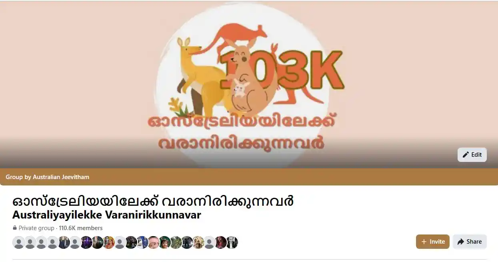

ഓസ്ട്രേലിയയിലേക്ക് വരാനിരിക്കുന്നവർ — Australiyayilekku Varanirikkunnavar
ഓസ്ട്രേലിയയിലേക്ക് കുടിയേറാൻ ആഗ്രഹിക്കുന്നവർക്കും, ഇപ്പോൾ കുടിയേറ്റ പ്രക്രിയയിലുള്ളവർക്കും, പുതുതായി എത്തിയവർക്കും വേണ്ടിയുള്ള ഏറ്റവും വലിയ മലയാളം സ്വകാര്യ ഫേസ്ബുക്ക് കമ്മ്യൂണിറ്റി. ജോലി, വിസ, ഡ്രൈവിംഗ് ലൈസൻസ്, സ്കൂൾ അഡ്മിഷൻ, വീട് വാടക, ജോലി തട്ടിപ്പുകൾ തിരിച്ചറിയൽ എന്നിവയെക്കുറിച്ചെല്ലാം ഇവിടെ സൗജന്യമായി സഹായം ലഭിക്കും.
A 110,000+ member private Malayalam Facebook group for Keralites moving to Australia — real answers on jobs, visas, driving licence conversion, renting, schools, culture shock, and how to spot fake job offers, from people who've actually lived it.
Started March 2023 · Moderated by 6 admins & the group founder · Free to join
2023 മാർച്ചിൽ തുടങ്ങിയ ഈ ഗ്രൂപ്പ് ഇന്ന് ഓസ്ട്രേലിയയിലേക്ക് വരുന്ന മലയാളികളുടെ ഏറ്റവും വിശ്വസനീയമായ വിവര സ്രോതസ്സാണ്. Started to answer repeated questions one-on-one, it's now a self-sustaining community where members help members every single day.
- Jobs & Job Scams
- Visa & Migration
- Driving Licence
- Schools
- Renting
- Culture Shock
- Hospitals
ഇത് എങ്ങനെ തുടങ്ങി? (How This Group Started)

ഓസ്ട്രേലിയൻ ജീവിതം എന്ന യൂട്യൂബ് ചാനൽ തുടങ്ങിയപ്പോൾ മുതൽ, ഓസ്ട്രേലിയയിലെ സ്ഥലങ്ങൾ, ജോലി സാധ്യതകൾ എന്നിവയെക്കുറിച്ച് നൂറുകണക്കിന് സന്ദേശങ്ങൾ ദിവസവും ലഭിച്ചു തുടങ്ങി. Answering the same questions individually — about jobs, visas, and where to live — became impossible to keep up with one message at a time.
മിക്ക ആളുകളും ചോദിക്കുന്നത് ഒരേ ചോദ്യങ്ങൾ തന്നെയാണെന്ന് മനസ്സിലായപ്പോൾ, എല്ലാവർക്കും ഒരുമിച്ച് ചോദിക്കാനും ഉത്തരം കിട്ടാനും ഒരു ഇടം വേണമെന്ന് തോന്നി. അങ്ങനെയാണ് 2023 മാർച്ചിൽ ഈ ഗ്രൂപ്പ് ജനിച്ചത്.
What began as a way to save time replying to repeated questions has grown into a 110,000+ strong community. Today, Australian Malayalis across every state actively help newcomers — often within minutes of a question being posted — making it one of the most active Kerala-to-Australia migration communities online.
Every question a Malayali moving to Australia actually has
ഈ ഗ്രൂപ്പിൽ ദിവസവും ചോദിക്കപ്പെടുന്ന പ്രധാന വിഷയങ്ങൾ:
Jobs & Genuine Offer Verification
From SEEK listings to aged care and IT roles — plus members helping each other verify whether a job offer is genuine or a scam before they pay any agent.
Visa & Migration Questions
Skilled visas, PR pathways, partner visas, and honest experiences from people who've been through the process — not just agent advice.
Driving Licence Conversion
State-by-state help converting a Kerala or Indian driving licence, from Parivahan extracts to NAATI translation requirements.
Schools & Curriculum
Choosing schools, understanding the Australian curriculum, and enrolment help from parents who've already been through it.
Renting & Settling In
Rental applications, bond processes, hospitals and healthcare access, and practical day-to-day settling-in advice.
Culture Shock & Emotional Support
Honest conversations about adjusting to life in Australia after moving from Kerala, the Gulf, the UK, Ireland, or New Zealand.
Malayalis from Kerala, the Gulf & beyond — all in one place
കേരളത്തിൽ നിന്നും ഗൾഫ് നാടുകളിൽ നിന്നും ലോകമെമ്പാടും നിന്നുമുള്ള മലയാളികൾ ഈ ഗ്രൂപ്പിലുണ്ട്. Members join from India, the UK, Australia, the UAE, Ireland, Saudi Arabia, New Zealand, Kuwait, Qatar, and Oman — with strong representation from Dubai, Kochi, Doha, Abu Dhabi, Alwaye, Melbourne, Thiruvananthapuram, Dublin, Sharjah, and Thrissur.
Top Countries
| India | 44,933 |
| United Kingdom | 14,454 |
| Australia | 13,964 |
| United Arab Emirates | 10,043 |
| Ireland | 3,850 |
| Saudi Arabia | 3,646 |
| New Zealand | 3,350 |
| Kuwait | 3,345 |
| Qatar | 3,245 |
| Oman | 1,685 |
Top Towns & Cities
| Dubai, UAE | 4,298 |
| Kochi, Kerala | 3,034 |
| Doha, Qatar | 2,772 |
| Abu Dhabi, UAE | 2,343 |
| Alwaye, Kerala | 2,233 |
| Melbourne, VIC | 1,978 |
| Thiruvananthapuram, Kerala | 1,767 |
| Dublin, Ireland | 1,462 |
| Sharjah, UAE | 1,389 |
| Thrissur, Kerala | 1,282 |
ആരാണ് ഈ ഗ്രൂപ്പ് നടത്തുന്നത്? (Who Runs This Group)
ഗ്രൂപ്പ് അഡ്മിൻ അക്കൗണ്ടും (Australian Jeevitham), അഞ്ചിലധികം സമർപ്പിത മോഡറേറ്റർമാരും ചേർന്നാണ് ഈ ഗ്രൂപ്പ് നിയന്ത്രിക്കുന്നത്. എന്നാൽ യഥാർത്ഥത്തിൽ ഈ ഗ്രൂപ്പിനെ ജീവസ്സുറ്റതാക്കുന്നത് ദിവസവും മറ്റുള്ളവരെ സഹായിക്കാൻ സമയം കണ്ടെത്തുന്ന നൂറുകണക്കിന് അംഗങ്ങളാണ്.
The group is run by the Australian Jeevitham admin account, alongside dedicated moderators including Jaimon Augustine, Amal Ambatt, Binesh Tholath, Mathews Acet, and Geordy Varghese — all recognised as All-Star Contributors for their active daily involvement. But what truly keeps it alive is the community itself — established Australian Malayalis who volunteer their time to answer newcomers' questions, often within minutes of a post going up.
Endless success stories, shared daily
ജോലി കിട്ടിയതും, തട്ടിപ്പിൽ നിന്ന് രക്ഷപ്പെട്ടതും, വീട് കണ്ടെത്തിയതും, ആദ്യ ദിവസങ്ങളിലെ പരിഭ്രമം മറികടന്നതും ഉൾപ്പെടെ എണ്ണമറ്റ അനുഭവങ്ങൾ അംഗങ്ങൾ പങ്കുവയ്ക്കാറുണ്ട്.
Members regularly post about landing their first job through a group connection, avoiding a fraudulent job offer after being warned by others, finding the right suburb to rent in, or simply feeling less alone in their first few weeks in a new country. These stories are what keep the group growing — real people helping real people, with nothing to sell.
Planning to move to Australia? Don't do it alone.
ഈ ഗ്രൂപ്പിൽ ചേരൂ, നിങ്ങളുടെ സംശയങ്ങൾ ചോദിക്കൂ, മറ്റുള്ളവരുടെ അനുഭവങ്ങളിൽ നിന്ന് പഠിക്കൂ.
▶ Join Australiyayilekku Varanirikkunnavar
It's a private group — your request is reviewed and approved by the admin team, usually within a day or two.
Frequently Asked Questions
Is Australiyayilekku Varanirikkunnavar free to join?
Yes, the group is completely free to join. It's a private Facebook group, so your request to join is reviewed by the admin team before you're added.
Do I need to already have a visa to join the group?
No. The group welcomes anyone at any stage — people still exploring whether to move, those actively applying for visas, people already approved and preparing to travel, and Malayalis who've already landed in Australia and want to help others.
How is this different from other Malayalam Australia groups on Facebook?
With over 110,000 members, six dedicated moderators, and an admin team actively involved since 2023, the group has built a strong culture of verifying job offers and warning members about scams, alongside genuinely fast, experience-based answers rather than agent advertising.
Can I ask about job scams or verify if a job offer is genuine?
Yes — this is one of the most common and valuable uses of the group. Members regularly post job offers and agent details to get community feedback before paying any fees or signing anything.
I'm moving from the Gulf, UK, Ireland, or New Zealand — is this group still for me?
Yes. While many members are moving directly from Kerala, a large number are relocating from the Gulf countries, the UK, Ireland, and New Zealand, and the group actively discusses the emotional and practical adjustment specific to each of these journeys.
More guides for living & working in Australia
Find Jobs in Australia
Government job boards for every state and territory, plus SEEK for the private sector.
How To Migrate Australia
Visa routes, personal experience, and where to find a MARA-registered migration agent.
First 30 Days in Australia
A day-by-day settlement checklist — SIM, TFN, bank account, Medicare, and more.